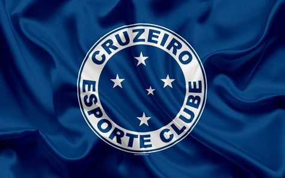
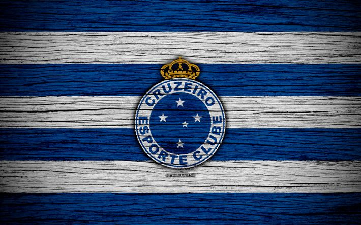
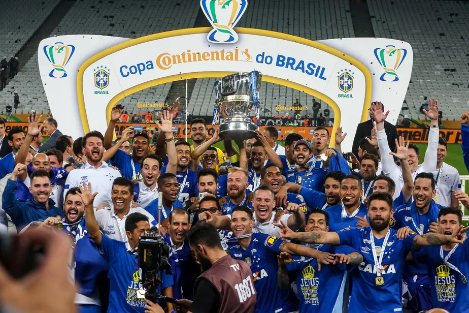

INTRODUÇÃO:
O Cruzeiro Esporte Clube é um dos maiores clubes de futebol do Brasil, fundado em 1921 em Belo Horizonte, Minas Gerais, inicialmente como Palestra Itália por imigrantes italianos, mudando de nome em 1942 em homenagem à constelação do Cruzeiro do Sul.


HISTÓRIA DO CLUBE
Começou como Palestra Itália, conquistando tricampeonato mineiro (1928-1930), e evoluiu para Cruzeiro após a Segunda Guerra Mundial. Tornou-se potência estadual com domínio no Campeonato Mineiro, sendo o maior vencedor com 39 títulos até 2026. A torcida organizada, como a Máfia Azul, é conhecida pela paixão intensa, enchendo estádios como o Mineirão. Desde os tempos iniciais, conquistou o tricampeonato mineiro (1928-1930) e evoluiu para potência nacional, com domínio estadual ao longo das décadas, somando 39 títulos do Campeonato Mineiro até 2026, incluindo a vitória recente sobre o Atlético-MG na final por 1 a 0 com gol de Kaio Jorge.
TÍTULOS:

- 6 Copas do Brasil: 1993, 1996, 2000, 2003, 2017, 2018
- 4 Campeonatos Brasileiros Série A: 1966, 2003, 2013, 2014
- 2 Copas Libertadores da América: 1976, 1997
- 2 Supercopa Libertadores: 1991, 1992
- 39 Campeonatos Mineiros: 1926, 1928, 1929, 1930, 1940, 1943, 1944, 1945, 1956, 1959, 1960, 1961, 1966, 1967, 1969, 1972, 1973, 1974, 1975, 1977, 1984, 1987, 1990, 1992, 1994, 1996, 1998, 2001, 2003, 2004, 2008, 2009, 2011, 2014, 2018, 2019, 2026